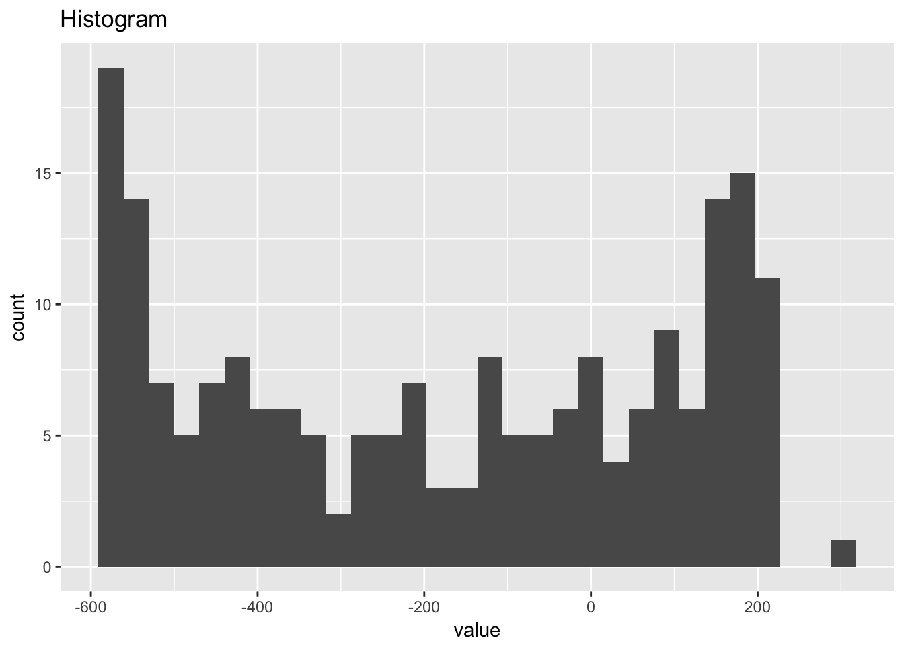
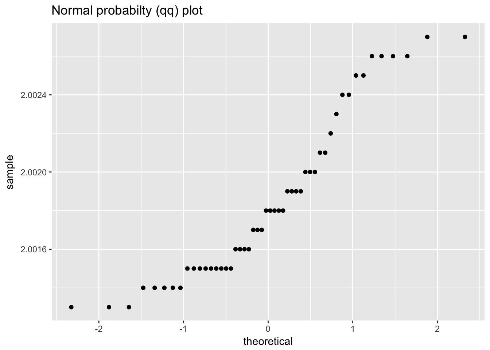
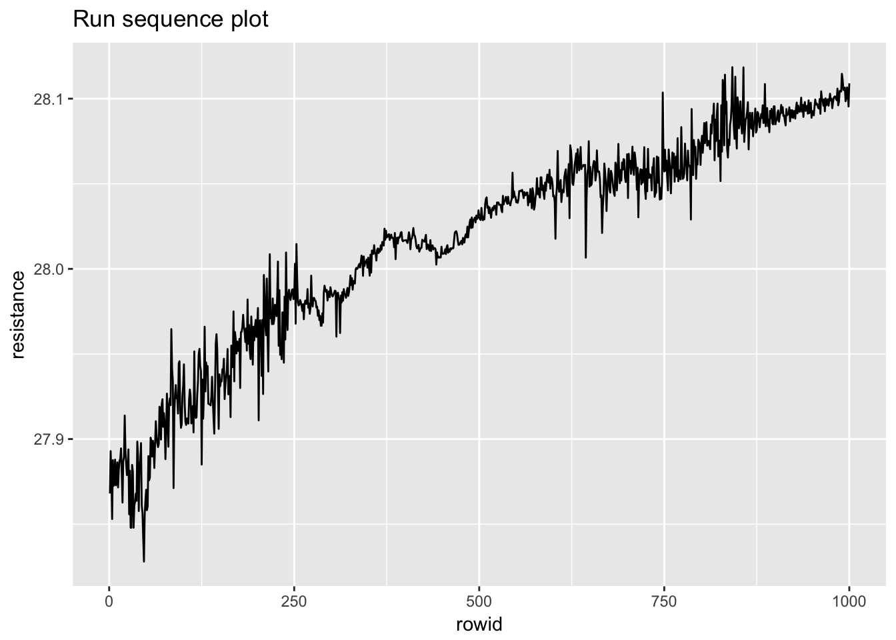
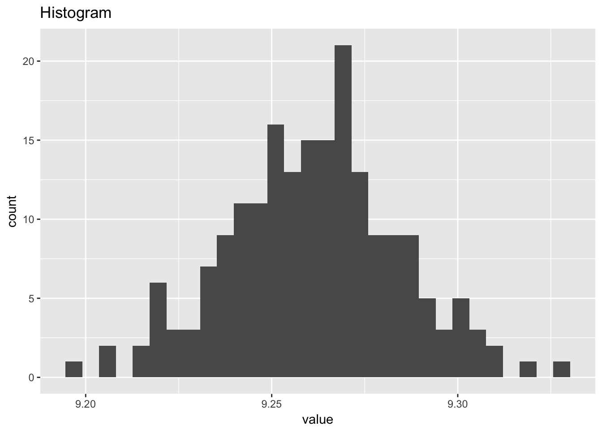
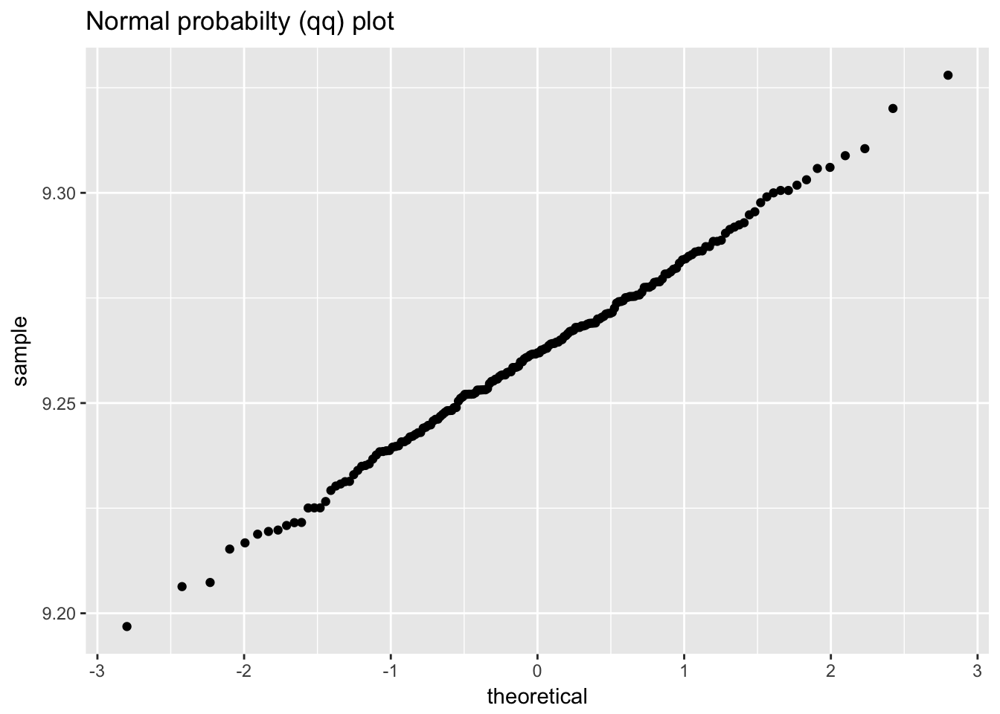
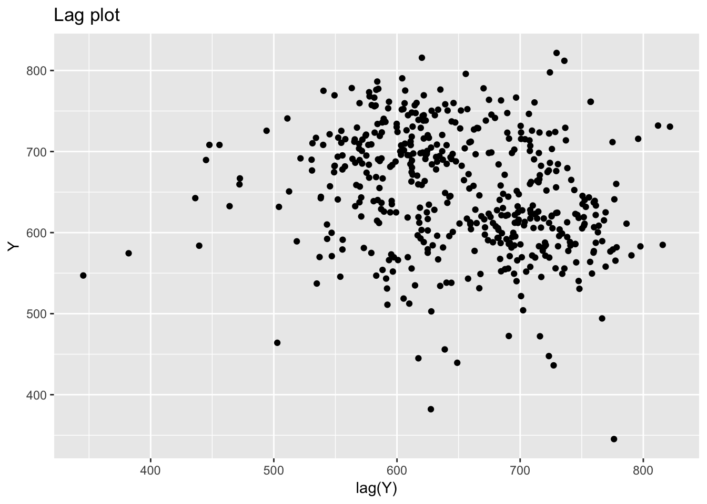
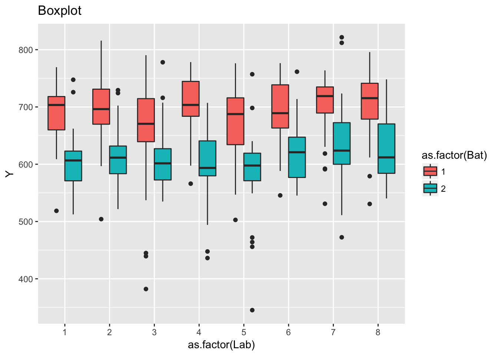

1 Exploratory Data Analysis
1.1 A EDA Example
The Anscombe dataset is an excelent place to start as it will allow us to start using R immediately. The anscombe dataset is part of the datasets package and is automatically loaded with RStudio.
## x1 x2 x3 x4 y1 y2 y3 y4
## 1 10 10 10 8 8.04 9.14 7.46 6.58
## 2 8 8 8 8 6.95 8.14 6.77 5.76
## 3 13 13 13 8 7.58 8.74 12.74 7.71
## 4 9 9 9 8 8.81 8.77 7.11 8.84
## 5 11 11 11 8 8.33 9.26 7.81 8.47
## 6 14 14 14 8 9.96 8.10 8.84 7.04
## 7 6 6 6 8 7.24 6.13 6.08 5.25
## 8 4 4 4 19 4.26 3.10 5.39 12.50
## 9 12 12 12 8 10.84 9.13 8.15 5.56
## 10 7 7 7 8 4.82 7.26 6.42 7.91
## 11 5 5 5 8 5.68 4.74 5.73 6.891.2 But first… let’s start working in the tidyverse
The tidyverse is discribed as
an opinionated collection of R packages designed for data science. All packages share an underlying design philosophy, grammar, and data structures.
You can install the tidyverse package with
install.packages("tidyverse")Once installed, simply load the package:
Additional details can be found at tidyverse.org
If you have only created charts and graphs using spreadsheets, you will assume the data is ready to plot. It might be nice to have the x1 and y1 values closer together in the table, but we could still select the individual columns and plot the datasets.
We’re going to jump right in with with the idea of tidy data. That each row should be a single observation.
As mentioned in the introduction, this text assumes a basic knowledge of the tidyverse. In this example, we will selct the x data from the data frame, rename the colunn labels, use the gather() function to tidy the data. We will then repeat the process for the y data, removing the group names from the data set. The last step is to combine these two data frames into a single data frame we will use for plotting. I’m sure there are more efficient ways to do this; however, the code used to do this manipulation is typical when working with non-tidy data. An added benifit is that hte code is readable.
x_anscombe <- anscombe %>% # results will be storred into a new object x_anscombe; we start with the original data frame "anscombe"
select(x1, x2, x3, x4) %>% # select the columns we want to work with
rename(group1 = x1, group2 = x2, group3 = x3, group4 = x4) %>% # rename the values using a generic header
gather(key = group, value = x_values, group1, group2, group3, group4) # gather the columns into rows
x_anscombe## group x_values
## 1 group1 10
## 2 group1 8
## 3 group1 13
## 4 group1 9
## 5 group1 11
## 6 group1 14
## 7 group1 6
## 8 group1 4
## 9 group1 12
## 10 group1 7
## 11 group1 5
## 12 group2 10
## 13 group2 8
## 14 group2 13
## 15 group2 9
## 16 group2 11
## 17 group2 14
## 18 group2 6
## 19 group2 4
## 20 group2 12
## 21 group2 7
## 22 group2 5
## 23 group3 10
## 24 group3 8
## 25 group3 13
## 26 group3 9
## 27 group3 11
## 28 group3 14
## 29 group3 6
## 30 group3 4
## 31 group3 12
## 32 group3 7
## 33 group3 5
## 34 group4 8
## 35 group4 8
## 36 group4 8
## 37 group4 8
## 38 group4 8
## 39 group4 8
## 40 group4 8
## 41 group4 19
## 42 group4 8
## 43 group4 8
## 44 group4 8y_anscombe <- anscombe %>%
select(y1, y2, y3, y4) %>%
gather(key = group, value = y_values, y1, y2, y3, y4) %>% # I don't need to rename the columns as I will discard them (I only need one column to indicate the group number)
select(y_values)
y_anscombe## y_values
## 1 8.04
## 2 6.95
## 3 7.58
## 4 8.81
## 5 8.33
## 6 9.96
## 7 7.24
## 8 4.26
## 9 10.84
## 10 4.82
## 11 5.68
## 12 9.14
## 13 8.14
## 14 8.74
## 15 8.77
## 16 9.26
## 17 8.10
## 18 6.13
## 19 3.10
## 20 9.13
## 21 7.26
## 22 4.74
## 23 7.46
## 24 6.77
## 25 12.74
## 26 7.11
## 27 7.81
## 28 8.84
## 29 6.08
## 30 5.39
## 31 8.15
## 32 6.42
## 33 5.73
## 34 6.58
## 35 5.76
## 36 7.71
## 37 8.84
## 38 8.47
## 39 7.04
## 40 5.25
## 41 12.50
## 42 5.56
## 43 7.91
## 44 6.89## group x_values y_values
## 1 group1 10 8.04
## 2 group1 8 6.95
## 3 group1 13 7.58
## 4 group1 9 8.81
## 5 group1 11 8.33
## 6 group1 14 9.96
## 7 group1 6 7.24
## 8 group1 4 4.26
## 9 group1 12 10.84
## 10 group1 7 4.82
## 11 group1 5 5.68
## 12 group2 10 9.14
## 13 group2 8 8.14
## 14 group2 13 8.74
## 15 group2 9 8.77
## 16 group2 11 9.26
## 17 group2 14 8.10
## 18 group2 6 6.13
## 19 group2 4 3.10
## 20 group2 12 9.13
## 21 group2 7 7.26
## 22 group2 5 4.74
## 23 group3 10 7.46
## 24 group3 8 6.77
## 25 group3 13 12.74
## 26 group3 9 7.11
## 27 group3 11 7.81
## 28 group3 14 8.84
## 29 group3 6 6.08
## 30 group3 4 5.39
## 31 group3 12 8.15
## 32 group3 7 6.42
## 33 group3 5 5.73
## 34 group4 8 6.58
## 35 group4 8 5.76
## 36 group4 8 7.71
## 37 group4 8 8.84
## 38 group4 8 8.47
## 39 group4 8 7.04
## 40 group4 8 5.25
## 41 group4 19 12.50
## 42 group4 8 5.56
## 43 group4 8 7.91
## 44 group4 8 6.89While this may seem like a lot of work to make a new table—which is much harder to read—this method allows us to exploit the gramar of graphics used by the ggplot2 package.
ggplot(anscombe_tidy, aes(x_values, y_values)) +
geom_point() +
geom_smooth(method = "lm", se = FALSE) +
facet_wrap(~group)It may not be immediately obvious from the plots, but the slope and intercept for each line are identical. We can calculate these values for each dataset using the linear model function, lm().
##
## Call:
## lm(formula = y1 ~ x1, data = anscombe)
##
## Coefficients:
## (Intercept) x1
## 3.0001 0.5001##
## Call:
## lm(formula = y2 ~ x2, data = anscombe)
##
## Coefficients:
## (Intercept) x2
## 3.001 0.500##
## Call:
## lm(formula = y3 ~ x3, data = anscombe)
##
## Coefficients:
## (Intercept) x3
## 3.0025 0.4997##
## Call:
## lm(formula = y4 ~ x4, data = anscombe)
##
## Coefficients:
## (Intercept) x4
## 3.0017 0.4999The calculated slope and intercept are the same (at least to three significant figures); the use of EDA allows us to differentiate the data quickly.
1.3 Common graphical analysis used in the e-Handbook
Four techniques are routinely used in the e-Handbook for preliminary EDA. These four charts are routinely displayed as a “4-plot.” Each technique will be presented in the following sub-sections.
- Run sequence plot
- Lag plot
- Histogram
- Normal probility plot
1.4 Case studies from chapter 1 of the NIST/SEMATECH e-Handbook
1.4.1 Normal random numbers
normal_random_numbers <- scan("NIST data/RANDN.DAT", skip = 25) %>%
as.tibble() %>%
rowid_to_column()
normal_random_numbers## # A tibble: 500 x 2
## rowid value
## <int> <dbl>
## 1 1 -1.28
## 2 2 -1.22
## 3 3 -0.453
## 4 4 -0.350
## 5 5 0.723
## 6 6 0.676
## 7 7 -1.10
## 8 8 -0.314
## 9 9 -0.394
## 10 10 -0.633
## # ... with 490 more rows
## Warning: Removed 1 rows containing missing values (geom_point).
## `stat_bin()` using `bins = 30`. Pick better value with `binwidth`.ggplot(normal_random_numbers, aes(sample = value)) +
geom_qq() +
labs(title = "Normal probabilty (qq) plot")
1.4.2 Uniform random numbers
uniform_random_numbers <- scan("NIST data/RANDU.DAT", skip = 25) %>%
as.tibble() %>%
rowid_to_column()
uniform_random_numbers## # A tibble: 500 x 2
## rowid value
## <int> <dbl>
## 1 1 0.101
## 2 2 0.253
## 3 3 0.520
## 4 4 0.863
## 5 5 0.355
## 6 6 0.810
## 7 7 0.912
## 8 8 0.293
## 9 9 0.375
## 10 10 0.481
## # ... with 490 more rows
## Warning: Removed 1 rows containing missing values (geom_point).
## `stat_bin()` using `bins = 30`. Pick better value with `binwidth`.
1.4.3 Random walk
random_walk <- scan("NIST data/RANDWALK.DAT", skip = 25) %>%
as.tibble() %>%
rowid_to_column()
random_walk## # A tibble: 500 x 2
## rowid value
## <int> <dbl>
## 1 1 -0.399
## 2 2 -0.646
## 3 3 -0.626
## 4 4 -0.262
## 5 5 -0.407
## 6 6 -0.0976
## 7 7 0.314
## 8 8 0.107
## 9 9 -0.0177
## 10 10 -0.0371
## # ... with 490 more rows## Warning: Removed 1 rows containing missing values (geom_point).## `stat_bin()` using `bins = 30`. Pick better value with `binwidth`.
1.4.4 Beam deflections
beam_deflections <- scan("NIST data/LEW.DAT", skip = 25) %>%
as.tibble() %>%
rowid_to_column()
beam_deflections## # A tibble: 200 x 2
## rowid value
## <int> <dbl>
## 1 1 -213.
## 2 2 -564.
## 3 3 -35.
## 4 4 -15.
## 5 5 141.
## 6 6 115.
## 7 7 -420.
## 8 8 -360.
## 9 9 203.
## 10 10 -338.
## # ... with 190 more rows
## Warning: Removed 1 rows containing missing values (geom_point).
## `stat_bin()` using `bins = 30`. Pick better value with `binwidth`.1.4.5 Filter transmitance
filter_transmitance <- scan("NIST data/MAVRO.DAT", skip = 25) %>%
as.tibble() %>%
rowid_to_column()
filter_transmitance## # A tibble: 50 x 2
## rowid value
## <int> <dbl>
## 1 1 2.00
## 2 2 2.00
## 3 3 2.00
## 4 4 2.00
## 5 5 2.00
## 6 6 2.00
## 7 7 2.00
## 8 8 2.00
## 9 9 2.00
## 10 10 2.00
## # ... with 40 more rows## Warning: Removed 1 rows containing missing values (geom_point).
## `stat_bin()` using `bins = 30`. Pick better value with `binwidth`.
1.4.6 Standard resistor
standard_resistor <- read_table2("NIST data/DZIUBA1.DAT", skip = 25, col_names = FALSE) %>%
rowid_to_column() %>%
rename(month = X1, day = X2, year = X3, resistance = X4)## Parsed with column specification:
## cols(
## X1 = col_character(),
## X2 = col_character(),
## X3 = col_integer(),
## X4 = col_double()
## )## # A tibble: 1,000 x 5
## rowid month day year resistance
## <int> <chr> <chr> <int> <dbl>
## 1 1 2 5 80 27.9
## 2 2 2 12 80 27.9
## 3 3 2 13 80 27.9
## 4 4 2 14 80 27.9
## 5 5 2 28 80 27.9
## 6 6 2 28 80 27.9
## 7 7 3 21 80 27.9
## 8 8 3 24 80 27.9
## 9 9 4 3 80 27.9
## 10 10 4 3 80 27.9
## # ... with 990 more rowsggplot(standard_resistor, aes(lag(resistance), resistance)) +
geom_point() +
labs(title = "Lag plot")## Warning: Removed 1 rows containing missing values (geom_point).## `stat_bin()` using `bins = 30`. Pick better value with `binwidth`.ggplot(standard_resistor, aes(sample = resistance)) +
geom_qq() +
labs(title = "Normal probabilty (qq) plot")
1.4.7 Heat flow meter 1
heat_flow_meter1 <- scan("NIST data/ZARR13.DAT", skip = 25) %>%
as.tibble() %>%
rowid_to_column()
heat_flow_meter1## # A tibble: 195 x 2
## rowid value
## <int> <dbl>
## 1 1 9.21
## 2 2 9.30
## 3 3 9.28
## 4 4 9.31
## 5 5 9.28
## 6 6 9.29
## 7 7 9.29
## 8 8 9.26
## 9 9 9.30
## 10 10 9.28
## # ... with 185 more rows
## Warning: Removed 1 rows containing missing values (geom_point).
## `stat_bin()` using `bins = 30`. Pick better value with `binwidth`.ggplot(heat_flow_meter1, aes(sample = value)) +
geom_qq() +
labs(title = "Normal probabilty (qq) plot")
1.4.8 Ceramic strength
ceramic_strength <- read_table2("NIST data/JAHANMI2.DAT", skip = 48, col_names = TRUE) %>%
filter(Lab >= 1) %>%
rowid_to_column()## Parsed with column specification:
## cols(
## Id = col_character(),
## Lab = col_integer(),
## Num = col_integer(),
## Test = col_integer(),
## Y = col_double(),
## X1 = col_integer(),
## X2 = col_integer(),
## X3 = col_integer(),
## X4 = col_integer(),
## Trt = col_integer(),
## Set = col_integer(),
## Llab = col_double(),
## Rep = col_integer(),
## Bat = col_integer(),
## Sblab = col_double(),
## Set2 = col_integer()
## )## Warning in rbind(names(probs), probs_f): number of columns of result is not
## a multiple of vector length (arg 2)## Warning: 1 parsing failure.
## row # A tibble: 1 x 5 col row col expected actual file expected <int> <chr> <chr> <chr> <chr> actual 1 1 <NA> 16 columns 1 columns 'NIST data/JAHANMI2.DAT' file # A tibble: 1 x 5## # A tibble: 480 x 17
## rowid Id Lab Num Test Y X1 X2 X3 X4 Trt Set
## <int> <chr> <int> <int> <int> <dbl> <int> <int> <int> <int> <int> <int>
## 1 1 1 1 1 1 609. -1 -1 -1 -1 1 1
## 2 2 2 1 2 1 570. -1 -1 -1 -1 1 1
## 3 3 3 1 3 1 690. -1 -1 -1 -1 1 1
## 4 4 4 1 4 1 748. -1 -1 -1 -1 1 1
## 5 5 5 1 5 1 618. -1 -1 -1 -1 1 1
## 6 6 6 1 6 1 612. -1 -1 -1 -1 1 1
## 7 7 7 1 7 1 680. -1 -1 -1 -1 1 1
## 8 8 8 1 8 1 608. -1 -1 -1 -1 1 1
## 9 9 9 1 9 1 726. -1 -1 -1 -1 1 1
## 10 10 10 1 10 1 605. -1 -1 -1 -1 1 1
## # ... with 470 more rows, and 5 more variables: Llab <dbl>, Rep <int>,
## # Bat <int>, Sblab <dbl>, Set2 <int>## Warning: Removed 1 rows containing missing values (geom_point).## `stat_bin()` using `bins = 30`. Pick better value with `binwidth`.
ggplot(ceramic_strength, aes(Y)) +
geom_histogram(aes(fill = as.factor(Bat)), bins = 20) +
facet_grid(Bat ~ .) +
labs(title = "Histogram")
ggplot(ceramic_strength, aes(as.factor(Bat), Y)) +
geom_boxplot(notch = TRUE) +
labs(title = "Boxplot")ggplot(ceramic_strength, aes(as.factor(Lab), Y)) +
geom_boxplot(aes(fill = as.factor(Bat))) +
labs(title = "Boxplot")
You can label chapter and section titles using {#label} after them, e.g., we can reference Chapter ??. If you do not manually label them, there will be automatic labels anyway, e.g., Chapter 3.
Figures and tables with captions will be placed in figure and table environments, respectively.

Figure 1.1: Here is a nice figure!
Reference a figure by its code chunk label with the fig: prefix, e.g., see Figure 1.1. Similarly, you can reference tables generated from knitr::kable(), e.g., see Table 1.1.
| Sepal.Length | Sepal.Width | Petal.Length | Petal.Width | Species |
|---|---|---|---|---|
| 5.1 | 3.5 | 1.4 | 0.2 | setosa |
| 4.9 | 3.0 | 1.4 | 0.2 | setosa |
| 4.7 | 3.2 | 1.3 | 0.2 | setosa |
| 4.6 | 3.1 | 1.5 | 0.2 | setosa |
| 5.0 | 3.6 | 1.4 | 0.2 | setosa |
| 5.4 | 3.9 | 1.7 | 0.4 | setosa |
| 4.6 | 3.4 | 1.4 | 0.3 | setosa |
| 5.0 | 3.4 | 1.5 | 0.2 | setosa |
| 4.4 | 2.9 | 1.4 | 0.2 | setosa |
| 4.9 | 3.1 | 1.5 | 0.1 | setosa |
| 5.4 | 3.7 | 1.5 | 0.2 | setosa |
| 4.8 | 3.4 | 1.6 | 0.2 | setosa |
| 4.8 | 3.0 | 1.4 | 0.1 | setosa |
| 4.3 | 3.0 | 1.1 | 0.1 | setosa |
| 5.8 | 4.0 | 1.2 | 0.2 | setosa |
| 5.7 | 4.4 | 1.5 | 0.4 | setosa |
| 5.4 | 3.9 | 1.3 | 0.4 | setosa |
| 5.1 | 3.5 | 1.4 | 0.3 | setosa |
| 5.7 | 3.8 | 1.7 | 0.3 | setosa |
| 5.1 | 3.8 | 1.5 | 0.3 | setosa |
You can write citations, too. For example, we are using the bookdown package (Xie 2018) in this sample book, which was built on top of R Markdown and knitr (Xie 2015).
I’d like to add a reference (Hoobler et al. 1993).
##
## Attaching package: 'magrittr'## The following object is masked from 'package:purrr':
##
## set_names## The following object is masked from 'package:tidyr':
##
## extractReferences
Xie, Yihui. 2018. Bookdown: Authoring Books and Technical Documents with R Markdown. https://CRAN.R-project.org/package=bookdown.
Xie, Yihui. 2015. Dynamic Documents with R and Knitr. 2nd ed. Boca Raton, Florida: Chapman; Hall/CRC. http://yihui.name/knitr/.
Hoobler, Ray J., Marc A. Hutton, Mills M. Dillard, Michael P. Castellani, Arnold L. Rheingold, Anne L. Rieger, Philip H. Rieger, Thomas C. Richards, and William E. Geiger. 1993. “Synthesis, characterization, and crystal structure of the chromium complex (.eta.5-C5Ph5)Cr(CO)3 radical.” Organometallics 12 (1):116–23. https://doi.org/10.1021/om00025a023.